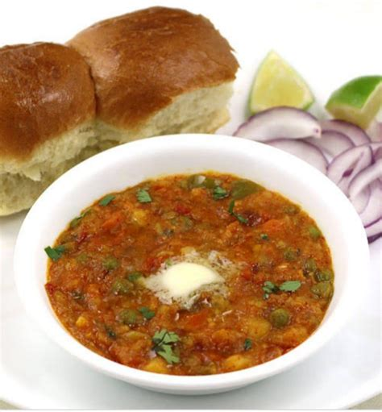

A Simple Pav Bhaji Recipe

Description
This is a very popular recipe in India, liked by almost everyone.There are local variations of the spices used but we can generally use a pre-packaged spice mix. Pav is actually the buns. Bhaji is the vegetables cooked with spice.
Ingredients Required
- 1/2 cup vegetable oil
- 2 teaspoons chopped garlic
- 2 teaspoons finely chopped green chilli peppers
- 1 cup chopped onions
- 2 teaspoons freshly grated ginger
- 1 cup chopped tomatoes
- 2 cups finely chopped cauliflower
- 1 cup chopped cabbage
- 1 cup green peas
- 4 potatoes, boiled and mashed
- 1 cup grated carrots
- salt to taste
- 3 tablespoons pavbhaji masala
- 1 tablespoon lemon juice
- A pack of buns
- 1/2tablespoon butter
- 1 tablespoon finely chopped green chili peppers
- 1/4 cup chopped fresh cilantro
Directions
- Heat oil in a wok over medium heat, saute garlic and green chili for 30 seconds
- Stir in onions and ginger until onions are brown.
- Add tomatoes, and cook until pasty. Stir in cauliflwer, cabbage, peas, carrots and potatoes.
- Season with the Pav Bhaji masala. Cover and cook for 15 minutes, stirring occassionly.
- Season with salt, stir in the lemon juice.
- Toast the buns, and spread lightly with butter. Serve garnished with green chili and cilantro.